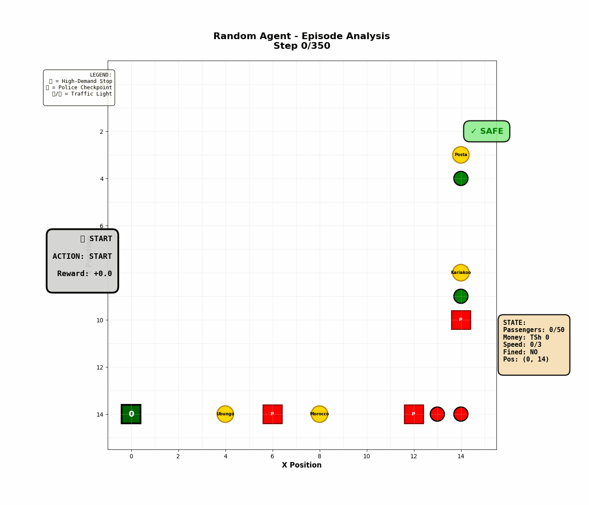
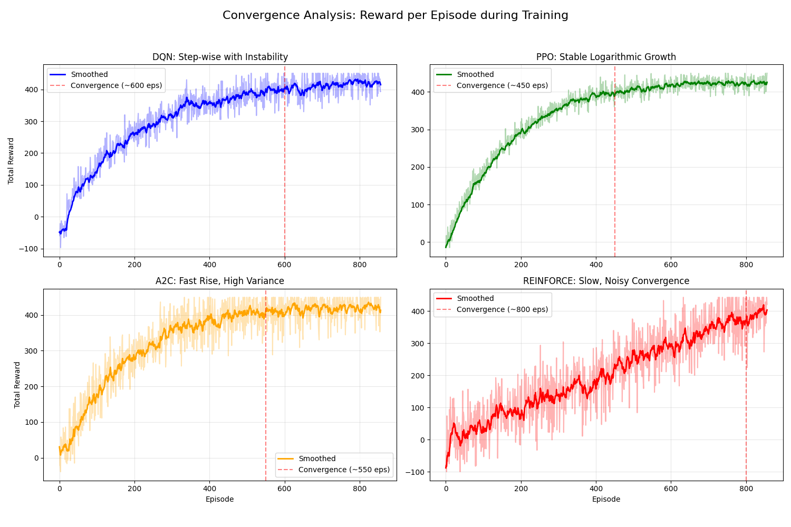
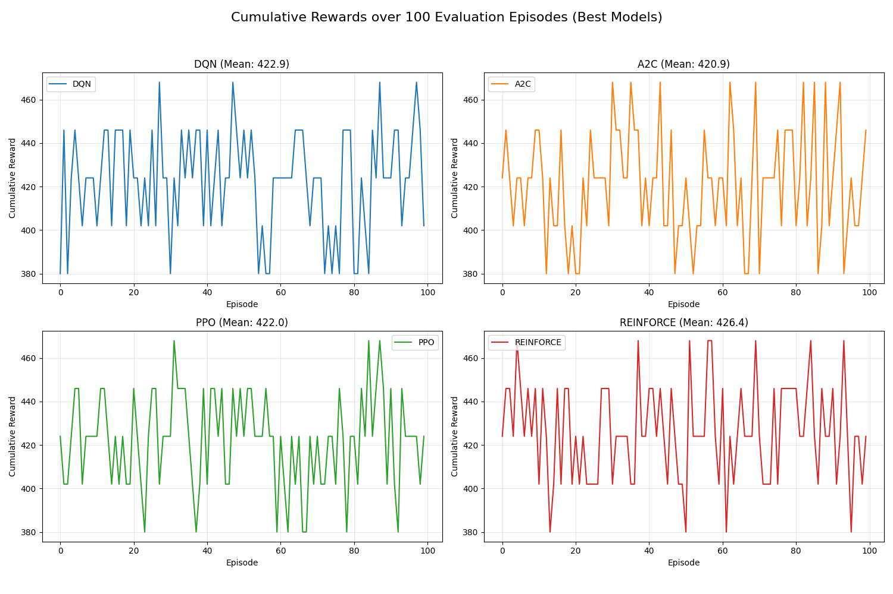
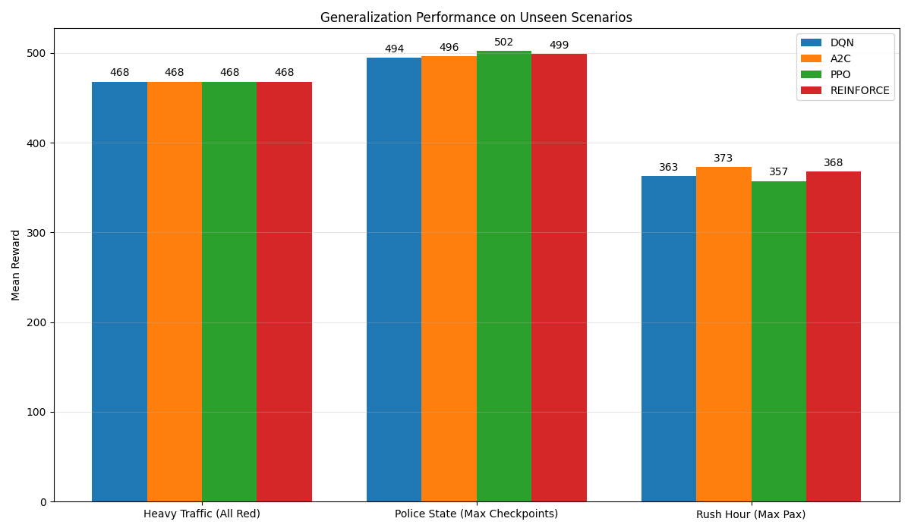
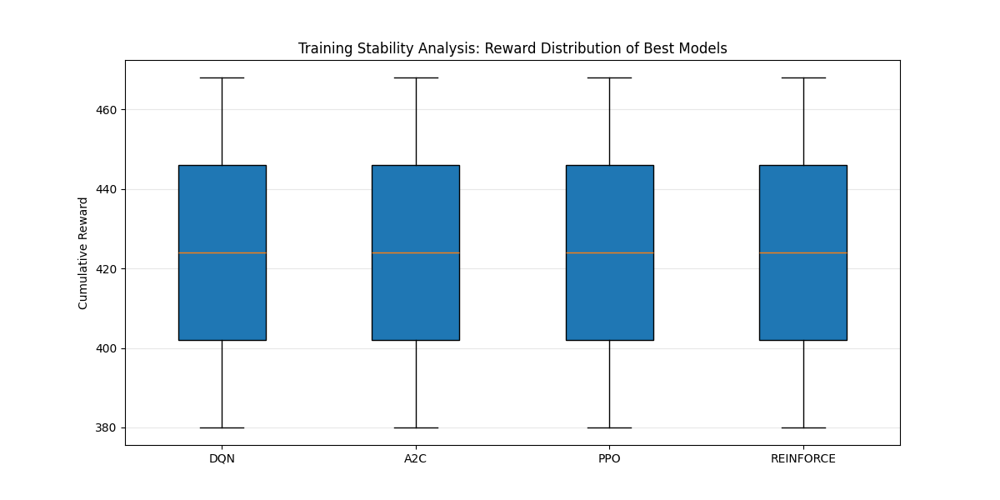

DALADALA

I built Daladala to answer a question that bothered me: can an AI independently discover that operating legally is more profitable than breaking the rules? I modelled Dar es Salaam's daladala transit system as a custom simulation and trained four algorithms inside it: DQN, PPO, A2C, and REINFORCE. Across 48 experiments and 14.4 million training steps, all four reached the same conclusion. Legality wins.
In Dar es Salaam, daladala drivers earn roughly TSh 22,000 a day operating legally. That's not enough to live on. So most overload their 33-seater buses to 50, 60, sometimes 70 passengers. The WHO links this single behaviour to 42% of Tanzania's fatal road accidents. The problem isn't bad drivers. It's a broken incentive structure. I wanted to know whether an AI agent, given the right simulation and incentives, could discover on its own that full legal compliance and maximum earnings point to exactly the same behaviour.
CHAPTER
PROBLEM & CONTEXT
Traffic enforcement isn't uniform. Police checkpoints appear randomly. Red lights cycle. Passenger demand shifts by the hour. A simple rule like "always stay under 33 passengers" misses all of this: it can't weigh when enforcement is likely, how much revenue is at stake, or whether the risk at a particular stop on a particular trip is worth taking. I needed something that could learn those trade-offs from experience.
I chose reinforcement learning because no dataset of "correct" daladala decisions exists. The right move at any moment depends on live conditions: how many passengers are waiting, whether a checkpoint is ahead, how far the bus is from the destination. RL learns by trial and error: take an action, observe the outcome, adjust. It was the only approach that could discover a strategy rather than just follow a preset rule.
The question I set out to answer: will these agents, trained from scratch in a simulation of Dar es Salaam's transit conditions, independently discover that staying fully legal is also the most profitable strategy? If they do, it suggests something important. Better economic incentives, not just better enforcement, could shift driver behaviour in the real world. This gives us a way to test that idea before anyone spends a dollar trying to implement it.
must_stop_now), a flag I designed to activate when a police checkpoint or red light is present at the agent's exact position. Learning to respond to this signal was the difference between finishing a run legally and taking a −40 penalty.| # | Feature | Range | Purpose |
|---|---|---|---|
| 0–1 | pos_x, pos_y | [0, 14] | Spatial position on grid |
| 2 | current_passengers | [0, 50] | Occupancy level |
| 3 | money_earned | [0, 150,000 TSh] | Revenue so far |
| 4 | current_speed | [0, 3] | Movement speed |
| 5 | light_is_red | {0, 1} | Red light active here? |
| 6 | police_checkpoint_here | {0, 1} | Police here? |
| 7 | must_stop_now ⚠ | {0, 1} | CRITICAL — police OR red light active |
| 8 | at_high_demand_stop | {0, 1} | At pickup/dropoff? |
| 9 | passengers_waiting | [0, 10] | Demand at current stop |
| 10 | must_stop_next | {0, 1} | Hazard in next cell? |
| 11–12 | light/police distance | lookahead | Proximity awareness |
| 13 | episode_progress | [0, 1] | Step fraction |

CHAPTER
ARCHITECTURE & SYSTEM
Each algorithm was evaluated over 50 test episodes per configuration. These are the hyperparameter sets that produced the highest mean rewards.
| Algorithm | Learning Rate | Key Hyperparameters | Best Mean Reward |
|---|---|---|---|
| DQN | 5e-4 | Buffer 100k · exploration_fraction 1.0 · ε_final 0.1 · γ=0.98 | 431.04 ±22.62 |
| PPO | 1e-3 | n_steps 2048 · batch 128 · clip_range 0.15 · γ=0.77 · ent_coef 0.0 | 429.72 ±23.20 |
| A2C | 5e-4 | n_steps 10 · γ=0.85 · GAE_λ=1.0 · ent_coef 0.01 | 428.84 ±22.56 |
| REINFORCE | 1e-3 | Hidden 64 · custom PyTorch (also tested 128, 256 — 64 was best) | 423.12 ±20.62 |
The equilibrium I wanted the agent to find on its own: operate near-legal capacity (19–33 passengers), obey every signal, complete the route. This yields around 430 reward points, more than any overloading shortcut, because even one crash or heavy fine wipes out several runs' worth of gains. The agent eventually learns that legality is the most profitable long-term strategy.
CHAPTER
RESULTS & EXECUTION
| Algorithm | Mean Reward | Max Reward | Std Dev | Legal Compliance | Crash Rate | Fine Rate |
|---|---|---|---|---|---|---|
| DQN | 422.9 | 468.0 | ±21.6 | ✓ 100% | 0% | 0% |
| PPO | 426.9 | 468.0 | ±22.4 | ✓ 100% | 0% | 0% |
| A2C | 422.2 | 468.0 | ±22.1 | ✓ 100% | 0% | 0% |
| REINFORCE | 425.8 | 468.0 | ±22.4 | ✓ 100% | 0% | 0% |




The generalization chart above tested each best model against three scenarios it never saw during training. Heavy Traffic activated every traffic light simultaneously — the agent had to stop at every cycle without earning extra points for waiting. Police State maxed out checkpoints per episode, the harshest compliance stress test. Rush Hour filled every stop to maximum passenger demand, forcing the agent to make harder pickup-vs-overload decisions under sustained pressure. All four algorithms maintained 100% legal compliance across all three scenarios, confirming the learned policy generalised rather than just memorised the training episodes.
The PPO agent running the Ubungo-to-Posta corridor live. The 3D system is built in React and Three.js, with a Flask REST API serving the trained model weights in real time. You can switch between four camera modes while the agent runs: Chase, Driver POV, Top-Down, and Cinematic.
CHAPTER
LEARNINGS
The reward function worked exactly as I designed it to. The key was making the legal route genuinely rewarding, not just "less penalised." The +50 legal completion bonus had to be large enough that no overloading shortcut was worth chasing. All four algorithms found that equilibrium independently, which confirmed the design was sound. The must_stop_now flag was the second critical decision. Without it, agents had no reliable way to know when compliance actually mattered. That one binary signal was the difference between clean training and directionless wandering.
PPO stood out on speed, reaching near-peak performance by around 150,000 steps, roughly 50% faster than DQN. I think it's because PPO limits how much the strategy changes per update: when one crash wipes out dozens of points, that restraint is exactly what you want. The 3D visualization system shipped as a fully working demo with four camera modes, which gave the project something real to show beyond training curves. And testing 12 configurations per algorithm meant the comparisons carried actual weight rather than being first-run guesses.
REINFORCE needs a baseline correction. Because it learns by waiting for a full run to finish and then adjusting on the total score, one crash near the end of an otherwise good trip can undo everything the agent built up from that run. A correction step that smooths out those swings is a well-known fix, and I wish I had built it in from the start. The final REINFORCE score would likely have been higher with it.
The agents also ended up playing it too safe, averaging only 19 passengers against a legal limit of 33. The reward function pushed them toward compliance but not toward maximising legal capacity. A stronger per-passenger revenue signal would probably close that gap. I would also revisit the score ceiling: all four models hit 468 as their best run, which suggests network capacity is the constraint, not the algorithm. A bigger network is the natural next step. And real GPS route data from Dar es Salaam would make the simulation far more accurate than the approximated 15×15 grid I was working with.